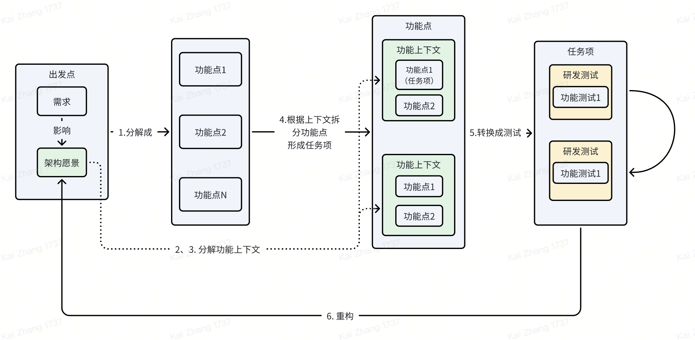

一些开发常见问题
-
当前架构无法满足新需求，不敢修改或者新增抽象。
-
一段代码变得很长，难以理解，不敢修改代码。
-
开发过程中通过『跑下看看』、『打断点』的方式来测试、定位问题，效率低下（隐式QA）。
-
有功能忘记写了。
以上的问题概括起来说，代码和架构不容易维护和扩展、开发效率低。TDD作为极限编程（XP）的核心实践之一，能够比较好的解决了这些问题。
测试驱动开发（TDD）
从上一节TDD可以解决的问题视角可以看出，TDD不是『如何写测试的技术』、『怎么消除QA』、『增加开发人员』的编码技巧。它是把测试作为里程碑的开发流程，把无计划的测试变成自动化测试提升开发效率，结合重构技巧保证代码和架构的可维护性和扩展性。
测试（也就是T字母）
首先，不是传统的单元测试，也就是不涉及被测试进程之外组件的测试，而是单元级别的功能测试。所以，也可能是传统的集成测试，但是绝对不是端到端测试；）。
『功能』是指用户视角的需求拆分以后的功能，是从业务视角出发，而不是代码中的某个类、函数等。比如，『账号密码的登入』这么一个需求可以拆分成两个功能，以及对应的测试：
-
账号密码正确登入成功。
-
账号或者密码错误登入失败。
但是，TDD不教你怎么写测试，写测试是TDD的必要技能，常见包括：状态验证、行为验证、怎么识别有效无效测试、怎么使用mock&stub等等，好测试的核心是：
-
发现问题：覆盖足够多的代码，尤其是核心代码
-
稳定：代码重构的时候不会误报（错误的失败），不用修改
-
快速执行
-
容易维护：容易执行、容易理解。
驱动（也就是第一个D字母）
驱动的是『架构』
软件开发工程师开发软件首要的是：理解需求，明白架构。
『理解需求』TDD无法驱动，但是能够验证是否做到了：写出测试，说明理解需求。
理解需求并完成分解可以成测试的TODO项之后，进入执行『红-绿-重构循环』这一TDD的核心三步骤：
红绿来自jUnit这个测试框架，失败的UT显示红色，成功的UT显示绿色。
-
红：针对单元功能编写一个失败的小测试，无法编译的也没关系；
-
绿：让这个测试快速通过，任何手段都可以，甚至是错误的实现；
-
重构：消除上一步中产生的坏味道。
『红』锚定了需要实现的需求，『绿』在当前架构下面（如果有）的合适组件下面实现刚刚锚定的需求，『重构』消除上一步中产生的各种坏味道，比如消除重复（合并组件），降低耦合（重新划分组件的职责）等等。
从『驱动』视角可以看出，他并不是教你怎么编码的技术，而是一个架构技术，是以逐步演进的方式驱动架构，是一种实效主义编码架构风格（不做PPT架构师；））。
极限
如果不会写某个测试对应的实现，TDD能驱动吗？不能！TDD无法驱动小于单元功能测试对应的需求，也无法驱动内部实现。但是，作为架构技术TDD能让你知道实现应该放在哪里，可以继续迭代其他需求，同样保持着一个有序可度量的研发节奏。至于这个需求怎么做可以找人帮忙做。
执行
基本原则
-
当且仅当存在失败的自动化测试时，才开始编写生产代码；
-
消除坏味道。
开发咒语
-
红：针对单元功能编写一个失败的小测试，无法编译的也没关系；
-
绿：让这个测试快速通过，任何手段都可以，甚至是错误的实现；
-
重构：消除上一步中产生的坏味道。
任务分解法（写出测试）
来自徐昊
-
首先将需求分解为功能点，也就是将需求转化为一系列可验证的里程碑点；
-
如果已经存在架构或架构愿景，则依据架构中定义的组件与交互，将功能点分解为不同的功能上下文；
-
如果尚不存在架构愿景，则可以将功能点作为功能上下文；
-
将功能点按照功能上下文，分解为任务项。也就是进一步将可验证的里程碑点，分解为功能上下文中可验证的任务项；
-
将任务项转化为自动化测试，进入红 / 绿 / 重构循环，驱动功能上下文内的功能实现；
-
如果重构涉及功能上下文的重新划分，即提取 / 合并组件，即视作对于架构的重构与梳理。需调整后续功能点中对于功能上下文以及任务项的划分。
-
如此往复，直到所有功能完成。

如何学习
-
练，属于不可言说知识，以上内容都看懂了也不会；
-
锻炼分析能力，它是支撑拆解任务基础；
-
使用具有重构能力的IDE，不然变成重写。